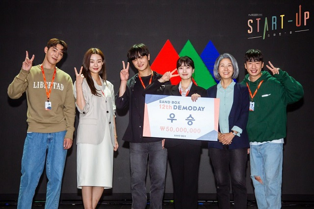

16 September 2022 (2)

malam ini 5 juli 2022 saya mencoba untuk menonton drama yang berjudul startup
drama ke 3 yang saya tonton ini bercerita tentang membangun startup dari 0 sampai benar-benar bisa jadi besar
drama ini berjumlah 16 episode dan hanya tinggal 2 episode terakhir yang belum ditonton karena saya ketiduran
jujur saja ketika nonton drama seperti ini pikiran saya sangat penasaran dengan jalan ceritanya, yang tadinya sudah ngantuk jadi tidak bisa tidur, yang tadinya udah mau tidur jadi malah nambah episode lagi
berikut hal yang saya dapat setelah menonton drama startup ini
Sandbox tempat simulasi membangun startup
sandbox itu kalau diartikan adalah pasir yang berada didalam kotak
startup yang dibangun dari 0 agar bisa menjadi besar dimulai dari tempat sandbox terlebih dahulu
disandobox ini startup akan dimentori untuk membangun startup yang sukses, disini juga semua simulasi dilakukan sebelum melakukan yang sebenarnya
jadi dapat disimpulan sandbox itu tempat latihan untuk dapat mengelola startup kedepannya harus bagaimana
Kecocokan Tim dan Kombinasi Skill yang tepat
yang saya rasakan adalah ketika startup itu dibuat maka harus memiliki tim dan skill yang tepat
jadi nggak bisa hanya 1 orang saja untuk menghandle semuanya
Punya ide Brilian yang menjual
startup yang bisa diartikan menawarkan solusi untuk sebuah masalah
maka pastinya harus ada ide yang benar-benar bisa menjual
tanpa adanya ide ini langkah selanjutnya akan susah karena tidak akan mudah dilakukan seperti memikat investor...
Pendanaan dimulai dari Investor
semua startup tidak pernah jauh dari kata investor
untuk menjalankan startup membutuhkan biaya yang tentunya tidak sedikit, maka dari itu investor dibutuhkan
Harus punya Skill berbisnis
startup sama halnya seperti berbisnis
tanpa adanya skill berbisnis startup tidak mudah untuk berkembang menjadi besar
Penutup
walau kebanyakan cerita cintanya saya tau itu untuk mendatangkan emosi lebih, namun inti dari film ini banyak sekali ilmu didalamnya
selain itu ada satu pertanyaan besar dari film ini yaitu 'Apa perusahaan seperti Sandbox itu benar-benar ada ?'
quotes untuk drama startup ini
semakin tau kenyataan, semakin pahit untuk dirasakan
keyword dari film ini
- startup
- investor
- AI
saya ingin sekali melihat kelanjutanya namun pala saya pusing sekali setelah menontonnya, sampai disini dulu tulisan ini dan nantikan tulisan-tulisan lainnya dari saya...